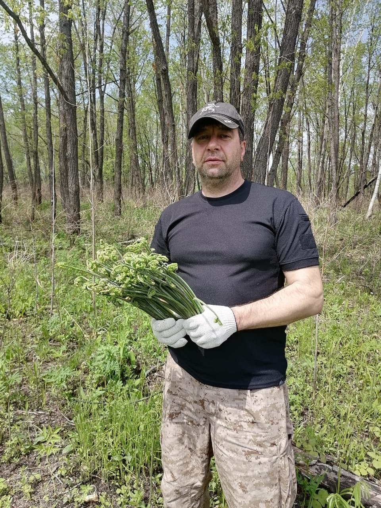

Папоротник
Употребление его в пищу благоприятно сказывается на процессах роста
Просмотреть
Наша компания является крупным заготовителем соленого и сушеного папоротника Орляк Дальневосточный.
Употребление его в пищу благоприятно сказывается на процессах роста
Просмотреть
Первые ростки папоротника появляются в мае.
Пучки укладываюся в чаны и пересыпаются солью.

Пучки укладываюся в чаны и пересыпаются солью.
Так выглядит уже посоленный папоротник.
После просолки, папоротник укладывают в тару: ведра по 20 кг
Мы изготавливаем так же сушеный папоротник.
Здесь представлен образец упаковки для розничной торговли.
В упаковке 100 гр. сушеного папоротника, из которого получается 800 грамм сырья для салата, если его замочить в кипятке.